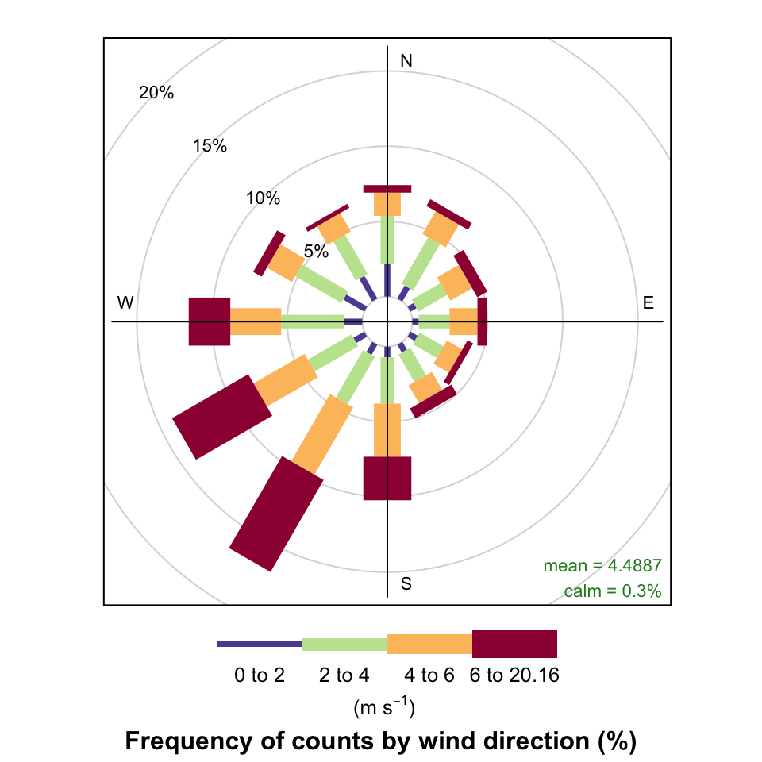
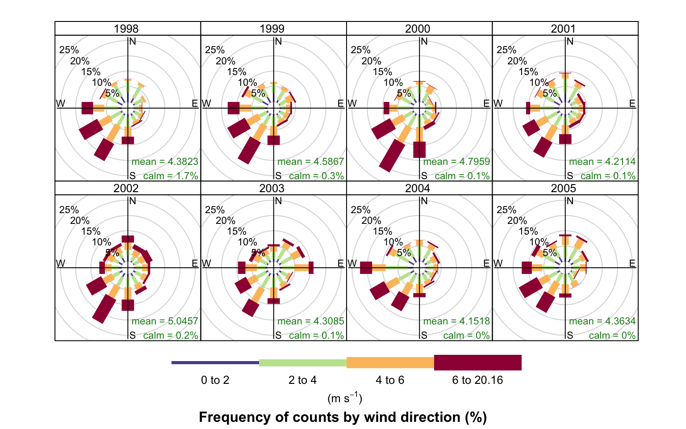
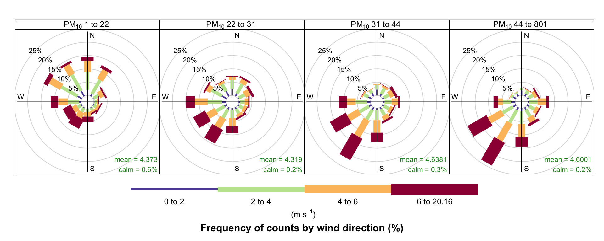
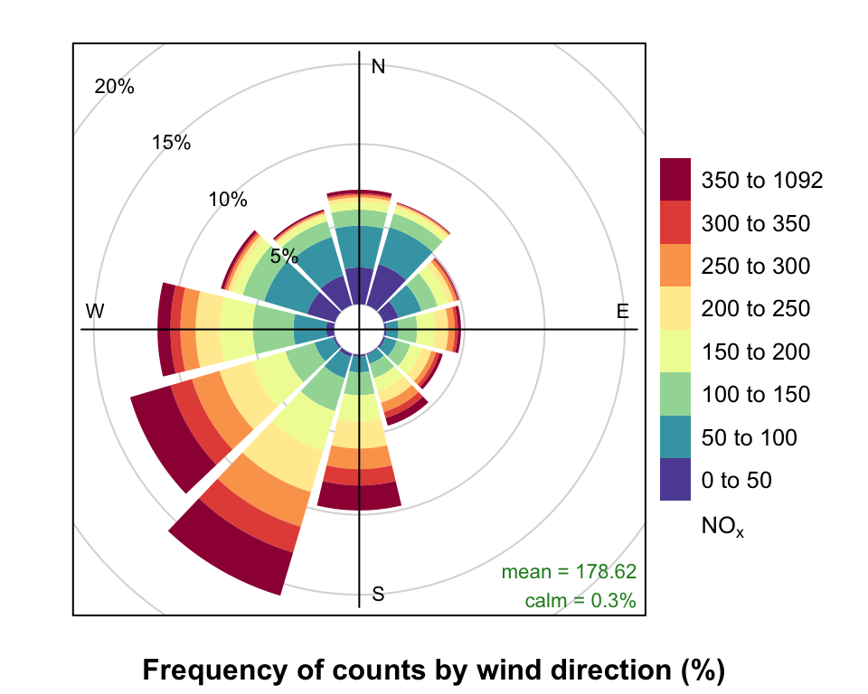
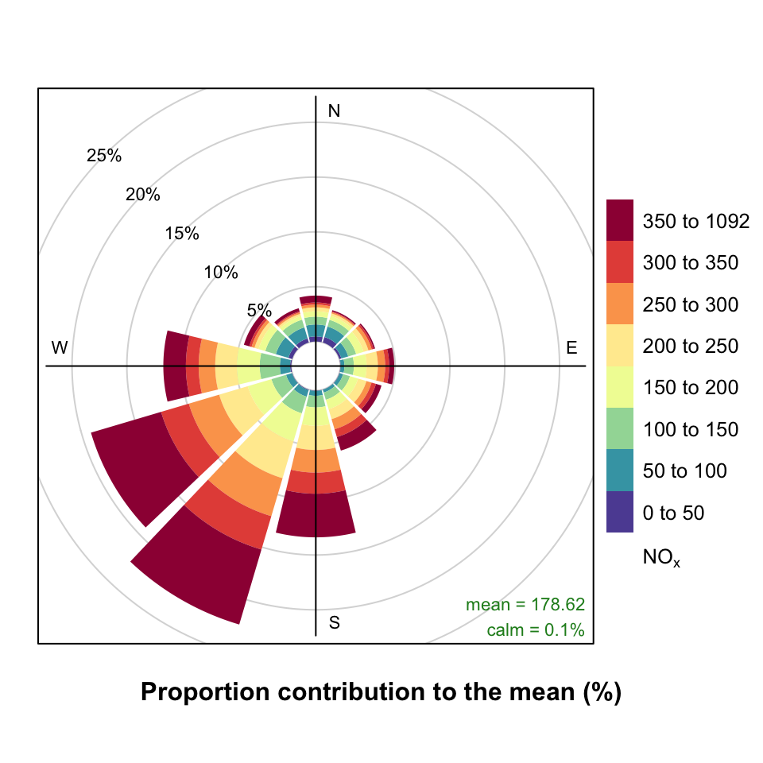
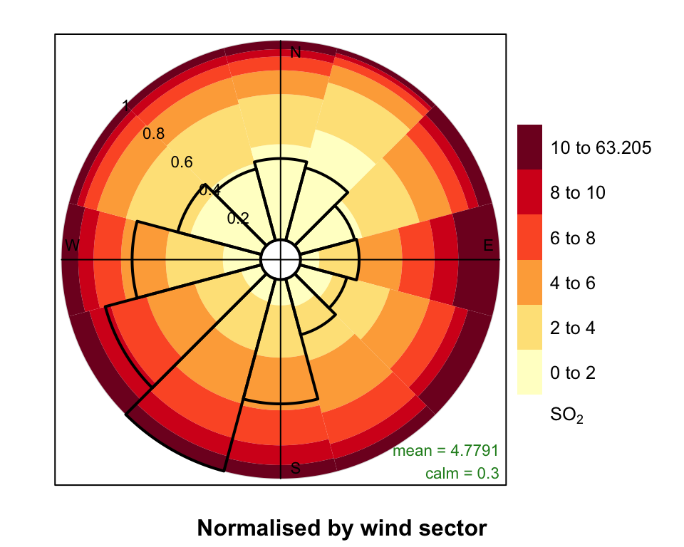
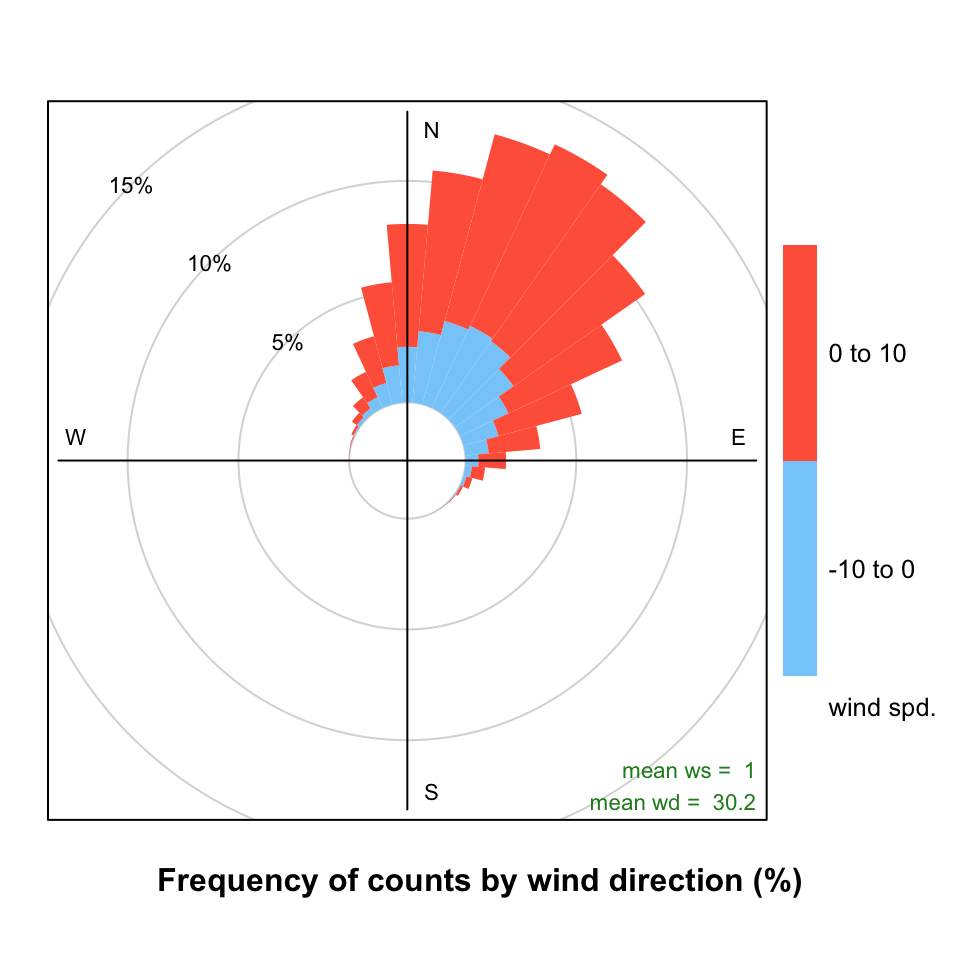
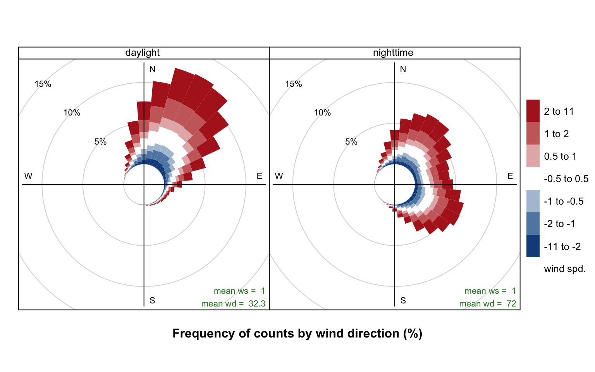

5 Wind and Pollution Roses
The wind rose is a very useful way of summarising meteorological data. It is particularly useful for showing how wind speed and wind direction conditions vary by year. The windRose function can plot wind roses in a variety of ways: summarising all available wind speed and wind direction data, plotting individual wind roses by year, and also by month. The latter is useful for considering how meteorological conditions vary by season.
Data are summarised by direction, typically by 45 or 30\(^\circ\) and by different wind speed categories. Typically, wind speeds are represented by different width ‘paddles’. The plots show the proportion (here represented as a percentage) of time that the wind is from a certain angle and wind speed range.
The windRose function also calculates the percentage of ‘calms’ i.e. when the wind speed is zero. UK Met Office data assigns these periods to 0 degrees wind direction with valid northerly winds being assigned to 360\(^\circ\).
The windRose function will also correct for bias when wind directions are rounded to the nearest 10 degrees but are displayed at angles that 10 degrees is not exactly divisible into e.g. 22.5\(^\circ\). When such data are binned, some angles i.e. N, E, S, W will comprise three intervals whereas others will comprise two, which can lead to significant bias. This issue and its solution is discussed by Droppo and Napier (2008) and Applequist (2012).1 openair uses a simple method to correct for the bias by globally rescaling the count in each wind direction bin by the number of directions it represents relative to the average. Thus, the primary four directions are each reduced by a factor of 0.75 and the remaining 12 directions are multiplied by 1.125.
5.1 Example of use
First we load the packages:
The function is very simply called as shown for Figure 5.1.
windRose(mydata)
windRose function to plot wind speed/direction frequencies. Wind speeds are split into the intervals shown by the scale in each panel. The grey circles show the % frequencies.Figure 5.2 highlights some interesting differences between the years. In 2000, for example, there were numerous occasions when the wind was from the SSW and 2003 clearly had more occasions when the wind was easterly. It can also be useful to use type = "month" to get an idea of how wind speed and direction vary seasonally.

windRose function to plot wind speed/direction frequencies by year. Wind speeds are split into the intervals shown by the scale in each panel. The grey circles show the 10 and 20% frequencies.The type option is very flexible in openair and can be used to quickly consider the dependencies between variables. Section 25.2) describes the basis of this option in openair plot. As an example, consider the question: what are the meteorological conditions that control high and low concentrations of PM10? By setting type = "pm10", openair will split the PM10 concentrations into four quantiles i.e. roughly equal numbers of points in each level. The plot will then show four different wind roses for each quantile level, although the default number of levels can be set by the user — see ?cutData for more details. Figure 5.3 shows the results of setting type = "pm10". For the lowest concentrations of PM10 the wind direction is dominated by northerly winds, and relatively low wind speeds. By contrast, the highest concentrations (plot furthest right) are dominated by relatively strong winds from the south-west. It is therefore very easy to obtain a good idea about the conditions that tend to lead to high (or low) concentrations of a pollutant. Furthermore, the type option is available in almost all openair functions.

A comparison of the effect that bias has can be seen by plotting the following. Note the prominent frequencies for W, E and N in particular that are due to the bias issue discussed by Applequist (2012).
pollutionRose is a variant of windRose that is useful for considering pollutant concentrations by wind direction, or more specifically the percentage time the concentration is in a particular range. This type of approach can be very informative for air pollutant species, as demonstrated by Ronald Henry and co-authors in Henry et al. (2009).
You can produce similar pollution roses using the pollutionRose function in recent versions of openair, e.g. as in Figure 5.4:
pollutionRose(mydata, pollutant = "nox")
pollutionRose and default pollutionRose settings.pollutionRose is wrapper for windRose. It simply replaces the wind speed data series in the supplied data set with another variable using the argument pollutant before passing that on to windRose. It also modifies breaks to estimate a sensible set of break points for that pollutant and uses a slightly different set of default options (key to right, wedge style plot) but otherwise handles arguments just like the parent windRose function.
While Figure 5.4 indicates that higher NOx concentrations are also associated with the SW, conditioning allows you to be much informative. For example, conditioning by SO2 (Figure 5.5) demonstrates that higher NOx concentrations are associated with the SW and much of the higher SO2 concentrations. However, it also highlights a notable NOx contribution from the E, most apparent at highest SO2 concentrations that is obscured in Figure 5.4 by a relatively high NOx background Figure 5.5.
pollutionRose(mydata,
pollutant = "nox",
type = "so2",
layout = c(4, 1),
key.position = "bottom"
)
pollutionRose can also usefully be used to show which wind directions dominate the overall concentrations. By supplying the option statistic = "prop.mean" (proportion contribution to the mean), a good idea can be gained as to which wind directions contribute most to overall concentrations, as well as providing information on the different concentration levels. A simple plot is shown in Figure 5.6, which clearly shows the dominance of south-westerly winds controlling the overall mean NOx concentrations at this site. Indeed, almost half the overall NOx concentration is contributed by two wind sectors to the south-west. The polarFreq function can also show this sort of information, but the pollution rose is more effective because both length and colour are used to show the contribution. These plots are very useful for understanding which wind directions control the overall mean concentrations.
pollutionRose(mydata, pollutant = "nox", statistic = "prop.mean")
It is sometimes useful to more clearly understand the contributions from wind directions that have low frequencies. For example, for a pollution rose of SO2 there are few occurrences of easterly winds making it difficult to see how the concentration intervals are made up. Try:
pollutionRose(mydata, pollutant = "so2", seg = 1)However, each wind sector can be normalised to give a probability between 0 and 1 to help show the variation within each wind sector more clearly. An example is shown in Figure 5.7 where for easterly winds it is now clearer that a greater proportion of the time the concentration is made up of high SO2 concentrations. In this plot each wind sector is scaled between 0 and 1. Also shown with a black like is an indication of the wind direction frequency to remind us that winds from the east occur with a low frequency.
pollutionRose(mydata,
pollutant = "so2",
normalise = TRUE,
seg = 1,
cols = "heat"
)
pollutionRose normalised by each wind sector.5.2 Comparing two meteorological data sets
The pollutionRose function is also useful for comparing two meteorological data sets. In this case a ‘reference’ data set is compared with a second data set. There are many reasons for doing so e.g. to see how one site compares with another or for meteorological model evaluation (more on that in later sections). In this case, ws and wd are considered to the the reference data sets with which a second set of wind speed and wind directions are to be compared (ws2 and wd2). The first set of values is subtracted from the second and the differences compared. If for example, wd2 was biased positive compared with wd then pollutionRose will show the bias in polar coordinates. In its default use, wind direction bias is colour-coded to show negative bias in one colour and positive bias in another.
Note that this plot is mostly aimed at showing wind direction biases. It does also show the wind speed bias but only if there is a wind direction bias also. However, in most practical situations the plot should show both wind speed and direction biases together. An example of a situation where no wind speed bias would be shown would be for westerly winds where there was absolutely no bias between two data sets in terms of westerly wind direction but there was a difference in wind speed. Users should be aware of this limitation.
In the next example, some artificial wind direction data are generated by adding a positive bias of 30~degrees with some normally distributed scatter. Also, the wind speed data are given a positive bias. The results are shown in Figure 5.8. The Figure clearly shows the mean positive bias in wind direction i.e. the direction is displaced from north (no bias). The colour scale also shows the extent to which wind speeds are biased i.e. there is a higher proportion of positively biased wind speeds shown by the red colour compared with the negatively biased shown in blue. Also shown in Figure 5.8 is the mean wind speed and direction bias as numerical values.
Note that the type option can be used in Figure 5.8 e.g. type = "month" to split the analysis in useful ways. This is useful if one wanted to see whether a site or the output from a model was biased for different periods. For example, type = "daylight" would show whether there are biases between nighttime and daytime conditions.
## $example of comparing 2 met sites
## first we will make some new ws/wd data with a postive bias
mydata <- mutate(mydata,
ws2 = ws + 2 * rnorm(nrow(mydata)) + 1,
wd2 = wd + 30 * rnorm(nrow(mydata)) + 30
)
## need to correct negative wd
id <- which(mydata$wd2 < 0)
mydata$wd2[id] <- mydata$wd2[id] + 360
## results show postive bias in wd and ws
pollutionRose(mydata,
ws = "ws",
wd = "wd",
ws2 = "ws2",
wd2 = "wd2"
)
An example of using user-supplied breaks is shown in Figure 5.9. In this case six intervals are chosen including one that spans -0.5 to +0.5 that is useful to show wind speeds that do not change.
## add some wd bias to some nighttime hours
id <- which(as.numeric(format(mydata$date, "%H")) %in% c(23, 1, 2, 3, 4, 5))
mydata$wd2[id] <- mydata$wd[id] + 30 * rnorm(length(id)) + 120
id <- which(mydata$wd2 < 0)
mydata$wd2[id] <- mydata$wd2[id] + 360
pollutionRose(mydata,
ws = "ws", wd = "wd", ws2 = "ws2", wd2 = "wd2",
breaks = c(-11, -2, -1, -0.5, 0.5, 1, 2, 11),
cols = c("dodgerblue4", "white", "firebrick"),
type = "daylight"
)
Thanks to Philippe Barneoud of Environment Canada for pointing this issue out.↩︎